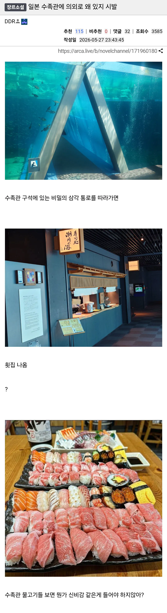

일본 수족관에 의외로 왜 있지 시발
댓글
니감나먹
주문하면 사장님 직접 들어가서 물고기잡는거 보여줌
천리마마트냐ㅋㅋ
수족관
생물
신선도
최고
오이쉬
진짜 최고일까?
수명을 다해 죽으면 대가리 치는거 아닐까
허기도 도나부지... 그나저나 양식으로 분류하겠지 ? 이건?
일식이지
..... 자연산에 대비한 양식. 을 말한거야...
그와 별개로 개존나 맛있겠네 어후
설국열차?
퀄리티 죽여보이는구만
해운대 아쿠아리움 갔을때도
아재아줌마 관람객들 우르르 오더니 물고기들 보다가
'야~ 마 안되긋다 회 무로 가자' 하던데 그런 의식의흐름 손님들 대상인가봄 ㅋㅋ
ㅋㅋㅋㅋㅋㅋㅋㅋㅋㅋㅋㅋㅋ
와 직이네
관상어는 회로 먹기엔 살도 없고 맛도 없는거 아니였어?
니가 감히 나를 먹는구나
와 존나 맛있어보이는데
임종 직전 안락사 후 회로 팔면...
안락사(시메)
8월에 수족관 갔었는데 회나 스시 생각 엄청 나긴 하더러
와 초밥 때깔 미쳤다..
수족관 물고기들을 보자니 군침이 싸악 도누
너무 너무 먹고 싶다 진짜 저기 있는거 다 먹을수 있다
다 먹고살자고 하는짓이쥬
음... 키워서 먹는다..
25만원 ~30만원 예상
이랏샤이마세!!!!!!
비쥬얼봐라 ㄷㄷ
양식하니 살이 두툼하게 올랐군
데이브 더 다이버?
어제까지하던 인어공주쇼는 왜 중단되었나요?
여수에 해양수산과학관 이라고 있는데
거기 한바퀴 돌면 회가 겁나 땡김 ㅋㅋㅋ
튼실한 횟감들이 눈앞에서 헤엄치고 있다구요
니가 드디어 나를 먹는구나